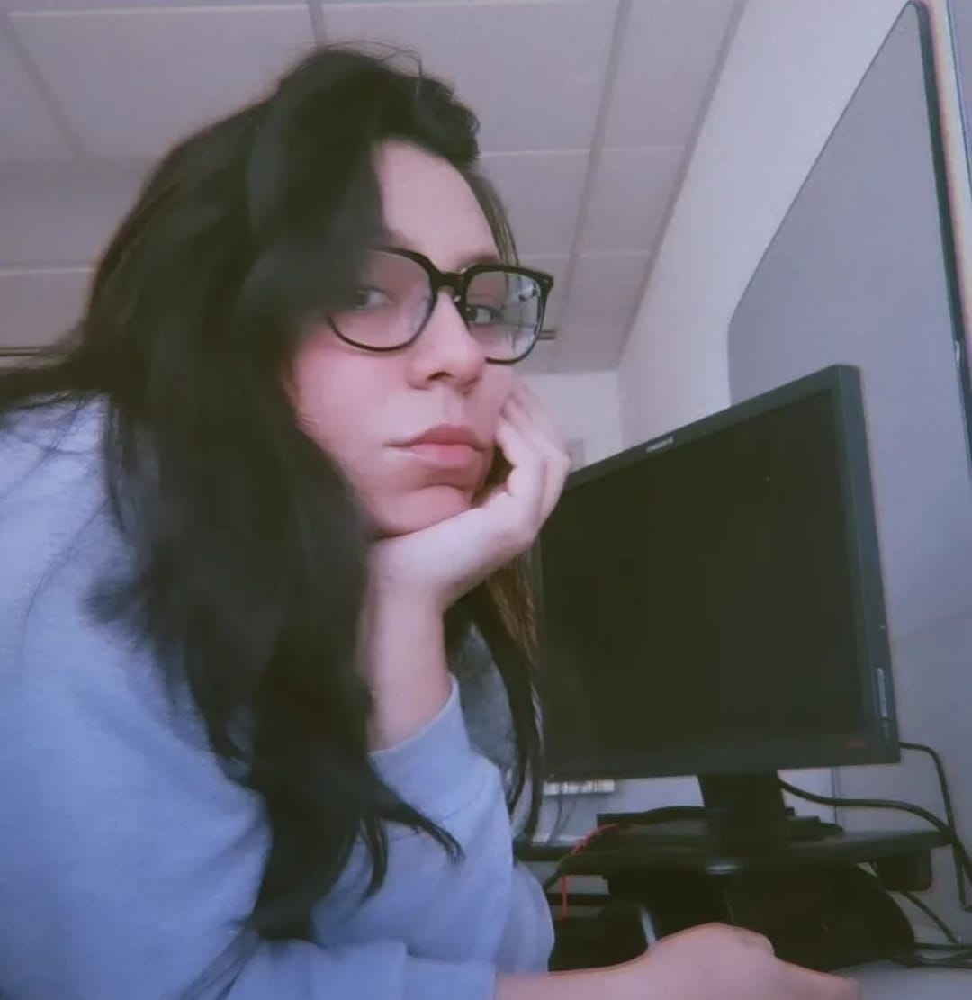

Penélope Alejandre

Nací el 9 de diciembre de 1994 en San Luis Potosí.
Tengo 29 años y soy Sagitario (el mejor signo del mundo).
Estudié la carrera de licenciatura en Física en la UASLP, posterior a eso, entré a trabajar en Hella
Automotive en GDL, Jalisco como ingeniero de pruebas. Después de 3 años y medio, me mudo a la ciudad de
Monterrey para mi nuevo empleo en Jhon Deere como ingeniero PV&V. Un año después decido renunciar para
comenzar mi sueño: estudiar una maestria en Ingenieria Aeroespacial ya que mi sueño siempre ha sido ser
astronauta.
Al mismo tiempo, comienzo mi propio negocio como nail artist retomando mi lado artístico.
En septiembre del 2023 comienzo mis estudios en la maestria en la UNAQ. Actualmente estoy estudiando en
el bootcamp de Generation México para desarrollador full stack Java iniciando en febrero de
2024.
Hobbies
- Bailar
- Pintar/Dibujar
- Bordar
- Leer
- Todo lo relacionado con el terror
- Muay Thai
TOP 5 canciones
- Blue Monday- New Order
- Fool- Caravan Palace
- Corsica '80- Kraak & Smaak
- Despierto- Simpson Ahuevo
- The zoo- Scorpions